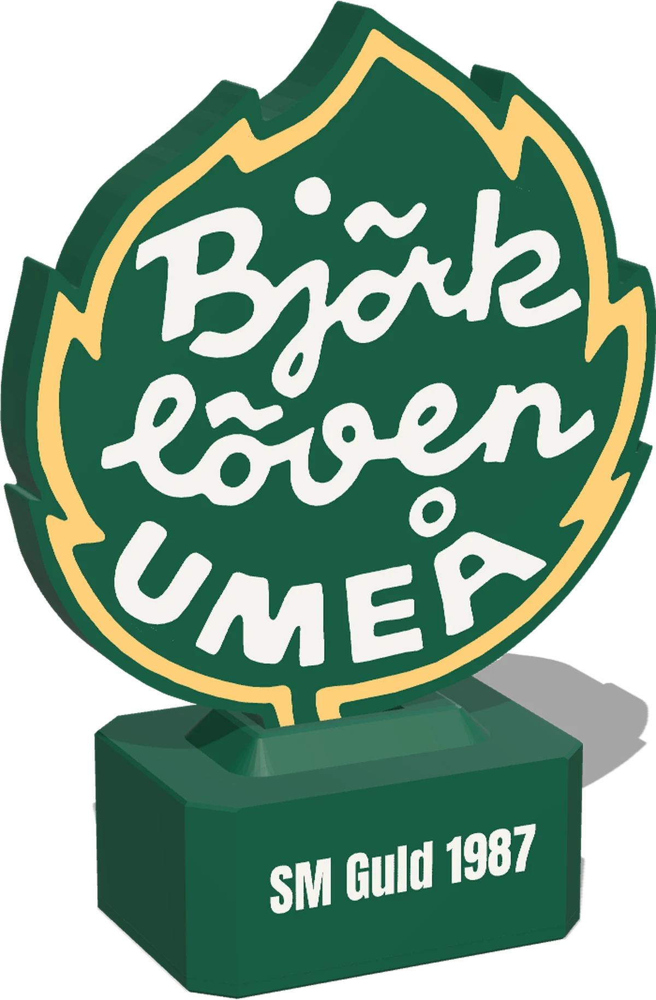

Kom igång på två minuter
Välkommen tillLövGlöd
Lövet som följer Löven. Koppla in, anslut med mobilen, klart.
Lövet som följer Löven. Koppla in, anslut med mobilen, klart.

Efter ett gult svep pulserar lampan grönt. Då väntar den på dig.
Välj LövGlöd-Setup-XXXX i mobilens WiFi-inställningar. Inget lösenord behövs.
En sida öppnas av sig själv, annars gå till 192.168.4.1. Välj nätverk, skriv lösenord, spara.
Lampan ansluter och glöder gult. Nu följer den varje match.
Målet kommer före tv:n?Öka Fördröjning på mål på statussidan. Standard är 15 s.
Startar lampan om vid mål?Laddaren orkar inte med fyrverkeriet. Byt till en starkare, minst 15 W.
Nytt WiFi eller ny router?Lampan pulserar rött. Anslut till LövGlöd-Setup-XXXX igen och välj det nya nätet.